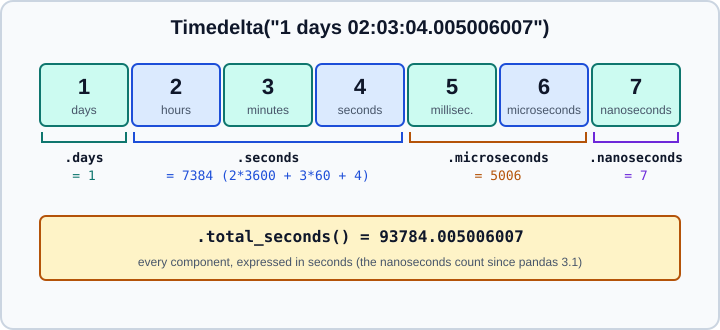

Time Deltas
|
This content was generated with the assistance of AI and should be verified against the official documentation before being relied on in production. |
A time delta is a duration: the difference between two timestamps, or a length of time such as "90 minutes". In pandas a
single duration is a Timedelta, a column of durations has the timedelta64 dtype, and an index of durations is a
TimedeltaIndex. Durations come up whenever you subtract two dates, measure how long a job took, shift a time series, or
bucket events by time since a start.
This page targets pandas 3.1 on Python 3.13 or 3.14 and was checked in October 2026; every example was run with Python
3.13 and pandas 3.1.0, and the printed output is the real output. It builds on the Series
and the Time Series and Dates pages; calendar-aware shifts such as "one
month later" and the frequency aliases used by timedelta_range are explained in
Resampling and Frequencies.
All examples use the standard imports:
import datetime as dt
import numpy as np
import pandas as pdCreating a Timedelta
pd.Timedelta is pandas' replacement for datetime.timedelta and numpy.timedelta64. It can be built from a string, from
keyword arguments, from a number and a unit, or from the standard-library and NumPy equivalents.
print(pd.Timedelta("1 days 2 hours"))
print(pd.Timedelta(days=1, hours=2, minutes=3))
print(pd.Timedelta(1.5, unit="h"))
print(pd.Timedelta("P1DT2H")) # ISO 8601 duration
print(pd.Timedelta("-1h"))
print(pd.Timedelta(dt.timedelta(days=1)), pd.Timedelta(np.timedelta64(5, "m")))1 days 02:00:00 1 days 02:03:00 0 days 01:30:00 1 days 02:00:00 -1 days +23:00:00 1 days 00:00:00 0 days 00:05:00
A negative duration prints as -1 days +23:00:00: the days part is negative and the time part is positive. This is the
representation inherited from datetime.timedelta; it is correct, but it is easy to misread. Use total_seconds() or
abs() when you need to show a magnitude.
Source: pandas user guide: Time deltas and pandas.Timedelta.
Units
The unit strings accepted in pandas 3.1 are "W" (week), "D" (day), "h", "min", "s", "ms", "us" and "ns",
written exactly like the frequency aliases of the resampling page.
The lowercase "w" and "d" and the uppercase "H", "S", "MIN", "MS", "US" and "NS" still work but emit a
Pandas4Warning, and the single letters "T", "L", "U" and "N" are rejected. The units for a month ("M") and a year
("Y") are rejected, because neither has a fixed length: a Timedelta is always an exact number of seconds. Use a
DateOffset (see the last section) when you mean calendar months.
import warnings
for unit in ["W", "D", "h", "min", "s", "ms", "us", "ns", "M", "Y", "H", "T", "S", "L", "w", "d"]:
with warnings.catch_warnings(record=True) as caught:
warnings.simplefilter("always")
try:
result = pd.Timedelta(1, unit)
note = f"-> {result}" + (f" [{type(caught[0].message).__name__}]" if caught else "")
except ValueError as exc:
note = "rejected: " + str(exc)[:58]
print(f"{unit!r:5} {note}")Source: pandas.Timedelta
'W' -> 7 days 00:00:00 'D' -> 1 days 00:00:00 'h' -> 0 days 01:00:00 'min' -> 0 days 00:01:00 's' -> 0 days 00:00:01 'ms' -> 0 days 00:00:00.001000 'us' -> 0 days 00:00:00.000001 'ns' -> 0 days 00:00:00.000000001 'M' rejected: Units 'M', 'Y', and 'y' are no longer supported, as they d 'Y' rejected: Units 'M', 'Y', and 'y' are no longer supported, as they d 'H' -> 0 days 01:00:00 [Pandas4Warning] 'T' rejected: invalid unit abbreviation: T 'S' -> 0 days 00:00:01 [Pandas4Warning] 'L' rejected: invalid unit abbreviation: L 'w' -> 7 days 00:00:00 [Pandas4Warning] 'd' -> 1 days 00:00:00 [Pandas4Warning]
Strings inside a duration use the same abbreviations ("1 W 2 D" is nine days); the words "day" and "days", "hour"
and "hours", "minute" and "minutes", "second" and "seconds" are also understood, but "1 week" is not. Prefer
the abbreviations, and write "1D" rather than "1d" to avoid the deprecation warning.
Resolution: microseconds by default
Since pandas 3.0 the default resolution of datetimes and timedeltas parsed from strings is the microsecond (us), and a
string that needs more precision falls back to nanoseconds. pandas 3.1 extends the same rule to numeric input, so
pd.Timedelta(1, unit="s").unit is "us". Floating-point numbers still produce nanosecond values, and so do strings with a nanosecond component.
print(pd.Timedelta("1D").unit, pd.Timedelta("1 day 2 s 500 ms").unit, pd.Timedelta("1ns").unit)
print(pd.Timedelta(1, unit="s").unit, pd.Timedelta(1.5, unit="s").unit)
print(pd.to_timedelta([1, 2], unit="s").dtype, pd.to_timedelta([1.5, 2], unit="s").dtype)
print(pd.to_timedelta(["1h", "30min"]).dtype, pd.to_timedelta(["1h", "1.5 ns"]).dtype)
s = pd.Timedelta(5, "s")
print(s.as_unit("ms").unit, s.as_unit("ns").unit, s.as_unit("ms").value)
print(pd.Timedelta(10**6, unit="D"))
try:
pd.Timedelta(10**6, unit="D").as_unit("ns")
except Exception as exc:
print(type(exc).__name__ + ":", exc)
print(pd.Timedelta.min, pd.Timedelta.max)us us ns us ns timedelta64[us] timedelta64[ns] timedelta64[us] timedelta64[ns] ms ns 5000000000 1000000 days 00:00:00 OutOfBoundsTimedelta: Cannot cast 1000000 days 00:00:00 to unit='ns' without overflow. -106752 days +00:12:43.145224193 106751 days 23:47:16.854775807
What this means in practice:
-
The resolution is stored in the object.
Timedelta.unitandSeries.dt.unitreport it, andas_unit("ms")converts it. Arithmetic between values of different units uses the finer one. -
The range depends on the unit. Nanosecond durations are limited to about plus or minus 292 years, which is what
Timedelta.minandTimedelta.maxreport; a microsecond value can reach roughly 292,000 years, soTimedelta(10**6, unit="D")is valid and its conversion to nanoseconds raisesOutOfBoundsTimedelta. -
Timedelta.valueis always in nanoseconds, whatever the unit:Timedelta(microseconds=1).valueis 1000, andTimedelta(1, "s").as_unit("ms").valueis 1000000000. Code that treats.valueas "the stored integer" breaks when the resolution changes. -
astype("int64")on a timedelta column returns the number of units of the dtype (microseconds by default), so an integer computed by code written for pandas 2 and nanoseconds is 1000 times smaller. Convert explicitly withastype("timedelta64[ns]")or divide by aTimedelta, as shown below, instead of relying on the integer.
Source: What’s new in pandas 3.0.0 and What’s new in pandas 3.1.0.
Components, attributes and totals
A Timedelta is stored as one integer count of its unit, but it exposes the pieces that a person would read from a
clock. The most common mistake is to confuse the attributes with totals.

t = pd.Timedelta("1 days 2 hours 3 minutes 4 seconds 5 ms 6 us 7 ns")
print(t)
print(t.days, t.seconds, t.microseconds, t.nanoseconds)
print(t.components)
print(t.total_seconds(), t.isoformat(), t.unit)
print(t.to_pytimedelta(), t.to_timedelta64())1 days 02:03:04.005006007 1 7384 5006 7 Components(days=1, hours=2, minutes=3, seconds=4, milliseconds=5, microseconds=6, nanoseconds=7) 93784.005006007 P1DT2H3M4.005006007S ns 1 day, 2:03:04.005006 93784005006007 nanoseconds
-
.daysis the whole number of days..secondsis the seconds within the day (0 to 86399): in the example it is 7384, which is 2 hours, 3 minutes and 4 seconds. It is not the total number of seconds. -
.microsecondscombines the milliseconds and microseconds (5006), and.nanosecondsholds the remaining 0 to 999. -
.total_seconds()returns the whole duration in seconds as a float. Since pandas 3.1 it includes the nanosecond component; earlier versions dropped it, soTimedelta(nanoseconds=999).total_seconds()returned 0.0 and now returns 9.99e-07. -
.componentsis a named tuple with seven fields, for custom formatting. -
.to_pytimedelta()returns adatetime.timedelta, which has microsecond precision, so the nanoseconds are dropped. -
A
Timedeltahas nostrftime. Build a text such as26:03:04fromcomponents, as in the example below.
The same distinction exists on a column through the dt accessor, and it matters as soon as a value exceeds one day:
long_gap = pd.Series(pd.to_timedelta(["1 days 02:00:00", "3 days 00:00:30"]))
print(long_gap.dt.days.tolist(), long_gap.dt.seconds.tolist(), long_gap.dt.total_seconds().tolist())[1, 3] [7200, 30] [93600.0, 259230.0]
A column "duration in hours" is therefore s.dt.total_seconds() / 3600, or s / pd.Timedelta("1h"), never s.dt.seconds / 3600.
Parsing durations: to_timedelta
pd.to_timedelta converts a scalar, a list or a Series. It understands strings, numbers (with a unit) and existing
timedelta objects, treats missing values as NaT, and returns a Timedelta, a TimedeltaIndex or a Series with the same
shape as the input.
print(pd.to_timedelta("1 day 2:03:04.5"))
print(pd.to_timedelta(["1D", "2h", "NaT"]))
print(pd.to_timedelta([1, 2, 3], unit="D"))
print(pd.to_timedelta("not a duration", errors="coerce"))
for text in ["not a duration", "3:25:00 PM", "1 M", "1 week"]:
try:
pd.to_timedelta(text)
except ValueError as exc:
print(f"{text!r}: ValueError: {exc}")Source: pandas.to_timedelta and pandas user guide: to_timedelta.
1 days 02:03:04.500000
TimedeltaIndex(['1 days 00:00:00', '0 days 02:00:00', NaT],
dtype='timedelta64[us]', freq=None)
TimedeltaIndex(['1 days', '2 days', '3 days'], dtype='timedelta64[us]',
freq=None)
NaT
'not a duration': ValueError: unit abbreviation w/o a number
'3:25:00 PM': ValueError: unexpected characters, PM, after hh:mm:ss format, received: 3:25:00 PM
'1 M': ValueError: Units 'M', 'Y' and 'y' do not represent unambiguous timedelta values and are not supported.
'1 week': ValueError: invalid unit abbreviation: week
errors has two values, "raise" (the default) and "coerce", which returns NaT for strings that cannot be parsed.
The old value "ignore" was removed in pandas 3.0 for to_datetime and to_numeric and is not accepted here either. pandas 3.1
also made to_timedelta and Timedelta raise on trailing characters after an hh:mm:ss field, such as an AM/PM marker:
"3:25:00 PM" used to be read as three hours. Clean the text first, or parse it with pd.to_datetime if it is a time of
day and not a duration.
read_csv and the other readers never parse durations automatically, so a column such as 1h 30min arrives as text and
is converted explicitly:
import io
df = pd.read_csv(io.StringIO("job,took\nA,1h 30min\nB,45min\n"))
print(df["took"].dtype)
df["took"] = pd.to_timedelta(df["took"])
print(df["took"].dtype)
print(df)str timedelta64[us] job took 0 A 0 days 01:30:00 1 B 0 days 00:45:00
Source: pandas.to_timedelta and pandas user guide: to_timedelta.
Durations from subtracting timestamps
Subtracting two Timestamp objects, or two datetime columns, gives a Timedelta. Adding a Timedelta to a timestamp
moves it by an exact amount of elapsed time. Subtracting a naive timestamp from a time-zone-aware one raises TypeError.
log = pd.DataFrame(
{
"start": pd.to_datetime(["2026-10-01 08:00", "2026-10-01 09:15", "2026-10-02 23:50"]),
"end": pd.to_datetime(["2026-10-01 08:45", "2026-10-01 11:00", "2026-10-03 00:20"]),
}
)
log["duration"] = log["end"] - log["start"]
log["minutes"] = log["duration"].dt.total_seconds() / 60
print(log)
print(log["duration"].sum(), log["duration"].mean())start end duration minutes 0 2026-10-01 08:00:00 2026-10-01 08:45:00 0 days 00:45:00 45.0 1 2026-10-01 09:15:00 2026-10-01 11:00:00 0 days 01:45:00 105.0 2 2026-10-02 23:50:00 2026-10-03 00:20:00 0 days 00:30:00 30.0 0 days 03:00:00 0 days 01:00:00
Series.diff() on a datetime column gives the gap from the previous row as a timedelta64 column with NaT in the
first row, which is the standard way to find gaps or irregular sampling in event data.
Arithmetic and comparison
Timedeltas can be added, subtracted, negated and compared. Multiplying and dividing by a number scales them. Dividing a
Timedelta by another Timedelta returns a plain float: "how many times does one fit into the other". Multiplying two
Timedeltas is meaningless and raises TypeError. // and % give the whole number of times and the remainder.
start = pd.Timestamp("2026-10-28 09:30")
end = pd.Timestamp("2026-10-30 18:00")
elapsed = end - start
print(elapsed, type(elapsed).__name__)
print(end + pd.Timedelta("36h"), end - pd.Timedelta(days=1))
print(elapsed * 2, elapsed / 2, -elapsed, abs(-elapsed))
print(elapsed / pd.Timedelta("1h")) # float: how many hours
print(elapsed // pd.Timedelta("1h"), elapsed % pd.Timedelta("1h"))
print(pd.Timedelta("1h") / pd.Timedelta("20min"))
try:
pd.Timedelta("1h") * pd.Timedelta("1h")
except TypeError as exc:
print("TypeError:", exc)
print(pd.Timedelta("1h") == pd.Timedelta("60min"), pd.Timedelta("1h") < pd.Timedelta("61min"))Source: pandas.Timedelta
2 days 08:30:00 Timedelta 2026-11-01 06:00:00 2026-10-29 18:00:00 4 days 17:00:00 1 days 04:15:00 -3 days +15:30:00 2 days 08:30:00 56.5 56 0 days 00:30:00 3.0 TypeError: unsupported operand type(s) for *: 'Timedelta' and 'Timedelta' True True
Rounding
round, floor and ceil snap a duration to a multiple of a frequency. They are available on a scalar and on a column
through dt, and Timestamp.round(), floor() and ceil() officially accept a Timedelta argument in pandas 3.1.
print(pd.Timedelta("1h 29min").round("h"), pd.Timedelta("1h 31min").floor("h"), pd.Timedelta("1h 31min").ceil("h"))
print(pd.Timestamp("2026-01-01 10:20").round(pd.Timedelta("15min")))Source: pandas.Timedelta
0 days 01:00:00 0 days 01:00:00 0 days 02:00:00 2026-01-01 10:15:00
Columns of durations: the dt accessor
A Series with the timedelta64 dtype has the dt accessor with days, seconds, microseconds, nanoseconds,
components, total_seconds(), round, floor, ceil and as_unit. Statistics work as for numbers: sum, mean, median,
min, max, std and cumsum all return durations, and missing values are NaT.
durations = pd.Series(pd.to_timedelta(["1h", "90min", "2h 30min", None]), name="duration")
print(durations)
print(durations.sum(), durations.mean(), durations.median(), durations.max(), sep=" | ")
print(durations.dt.total_seconds().tolist())
print(durations.dt.components)
print(durations.dt.round("h").tolist())
print((durations / pd.Timedelta("1h")).tolist())
print(durations.isna().tolist(), durations.fillna(pd.Timedelta(0)).tolist())
print((durations > pd.Timedelta("1h30min")).tolist())
print(durations.dt.as_unit("s").dtype)0 0 days 01:00:00
1 0 days 01:30:00
2 0 days 02:30:00
3 NaT
Name: duration, dtype: timedelta64[us]
0 days 05:00:00 | 0 days 01:40:00 | 0 days 01:30:00 | 0 days 02:30:00
[3600.0, 5400.0, 9000.0, nan]
days hours minutes seconds milliseconds microseconds nanoseconds
0 0.0 1.0 0.0 0.0 0.0 0.0 0.0
1 0.0 1.0 30.0 0.0 0.0 0.0 0.0
2 0.0 2.0 30.0 0.0 0.0 0.0 0.0
3 NaN NaN NaN NaN NaN NaN NaN
[Timedelta('0 days 01:00:00'), Timedelta('0 days 02:00:00'), Timedelta('0 days 02:00:00'), NaT]
[1.0, 1.5, 2.5, nan]
[False, False, True, False]
timedelta64[s]
Two details in that output are worth knowing. mean skips NaT by default, and the components table turns into floats
as soon as one value is missing. Comparisons with NaT are False, as NaN comparisons are for floats. Since pandas
3.1 the string form of a timedelta64 column aligns the fractional seconds.
A duration column can be grouped and aggregated like any other, and a TimedeltaIndex can be resampled to bin
elapsed time, for example "time since the start of an experiment":
jobs = pd.DataFrame(
{"team": ["a", "a", "b"], "took": pd.to_timedelta(["1h", "2h 30min", "45min"])}
)
print(jobs.groupby("team")["took"].agg(["sum", "mean", "max"]))
by_len = pd.Series(1, index=pd.to_timedelta(["0h", "20min", "50min", "70min"]))
print(by_len.resample("30min").sum())sum mean max team a 0 days 03:30:00 0 days 01:45:00 0 days 02:30:00 b 0 days 00:45:00 0 days 00:45:00 0 days 00:45:00 0 days 00:00:00 2 0 days 00:30:00 1 0 days 01:00:00 1 Freq: 30min, dtype: int64
TimedeltaIndex and timedelta_range
pd.timedelta_range builds a regular TimedeltaIndex, the equivalent of date_range for durations. Give two of
start, end, periods and freq.
print(pd.timedelta_range("1 day", periods=4))
print(pd.timedelta_range("0h", "1h", freq="20min"))
print(pd.timedelta_range("0h", "1h", periods=3))TimedeltaIndex(['1 days', '2 days', '3 days', '4 days'],
dtype='timedelta64[us]', freq='D')
TimedeltaIndex(['0 days 00:00:00', '0 days 00:20:00', '0 days 00:40:00',
'0 days 01:00:00'],
dtype='timedelta64[us]', freq='20min')
TimedeltaIndex(['0 days 00:00:00', '0 days 00:30:00', '0 days 01:00:00'],
dtype='timedelta64[us]', freq=None)
The third call returns freq=None because the interval was computed from periods; use freq="30min" when you want the
index to carry a frequency. A TimedeltaIndex supports the same resample, slicing by string (s["1 day":"2 days"])
and asfreq calls as a DatetimeIndex.
Formatting a duration
There is no strftime for durations; write a small function over components. Hours beyond 24 are folded into the
hour field so that the text shows total elapsed time.
def hms(td):
c = td.components
return f"{c.days * 24 + c.hours:02d}:{c.minutes:02d}:{c.seconds:02d}"
print(hms(pd.Timedelta("1 days 02:03:04")))Source: pandas.Timedelta.components
26:03:04
Timedelta.isoformat() gives the ISO 8601 form (P1DT2H3M4.005006007S) that other systems and pd.Timedelta itself can
read back, and str(td) is the readable form.
Timedelta or calendar offset?
A Timedelta is an exact number of elapsed seconds. A DateOffset or an offset such as pd.offsets.Day, MonthEnd
or BusinessDay is a calendar operation. They give different answers when the calendar is not uniform:
# Months have different lengths
print(pd.Timestamp("2026-01-31") + pd.Timedelta(days=30))
print(pd.Timestamp("2026-01-31") + pd.DateOffset(months=1))
# Whole days between dates, with and without weekends
print((pd.Timestamp("2026-11-02") - pd.Timestamp("2026-10-26")).days)
print(np.busday_count("2026-10-26", "2026-11-02"))
# Time zones and daylight saving: elapsed time versus wall-clock time
t0 = pd.Timestamp("2026-03-07 12:00", tz="America/New_York")
print(t0 + pd.Timedelta(hours=24))
print(t0 + pd.offsets.Day(1))
print(t0 + pd.DateOffset(days=1))2026-03-02 00:00:00 2026-02-28 00:00:00 7 5 2026-03-08 13:00:00-04:00 2026-03-08 12:00:00-04:00 2026-03-08 12:00:00-04:00
New York changed to daylight saving time at 02:00 on 8 March 2026, so 24 elapsed hours after Saturday noon is Sunday
13:00, while one calendar day after Saturday noon is Sunday 12:00. Since pandas 3.0 pd.offsets.Day always means a
calendar day, and Day(1) is no longer equal to Hour(24); use a Timedelta for elapsed time and an offset for
calendar time. The pandas 3.0 release notes also state that Timedelta no longer accepts Day objects and that
subtracting a Timedelta from a Day is unsupported; do not rely on mixing the two. The rules for time zones, tz_localize
and tz_convert are in Time Series and Dates.
For business days, a Timedelta cannot skip weekends: use pd.offsets.BDay, pd.bdate_range or np.busday_count, as
above.
Differences from older code and books
Books and tutorials from the pandas 0.2x era (2017) and earlier describe Timedelta correctly in outline, but several details
changed:
| Older statement | Status in pandas 3.1 | What to do |
|---|---|---|
Timedeltas are always nanosecond ( |
The default is |
Check |
|
|
Divide by |
|
Deprecated spellings emit |
|
|
Not accepted |
|
|
Rejected |
|
|
Includes them since 3.1 |
Nothing to do; results may differ at the 1e-9 level |
|
|
Parse times of day with |
|
Day is a calendar offset since 3.0, not a fixed duration |
Use |
Pitfalls checklist
-
.secondsis the seconds within the day,.daysthe whole days; usetotal_seconds()for totals. -
A duration printed as
-1 days +23:00:00is minus one hour. -
Timedelta.valueis always nanoseconds, andastype("int64")uses the unit of the dtype. -
Timedeltacannot express months or years; useDateOffsetfor calendar steps. -
Convert text durations explicitly with
to_timedelta; readers do not do it for you. -
Division of two Timedeltas is a float; multiplication of two Timedeltas is an error.
-
Elapsed 24 hours and a calendar day differ across daylight-saving changes.
-
Check the unit before comparing code output with older results, and use
as_unitto align resolutions.
References
-
R dates and times for the equivalent concepts in R